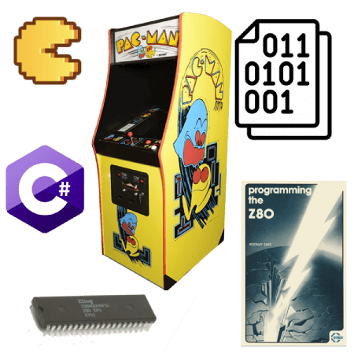
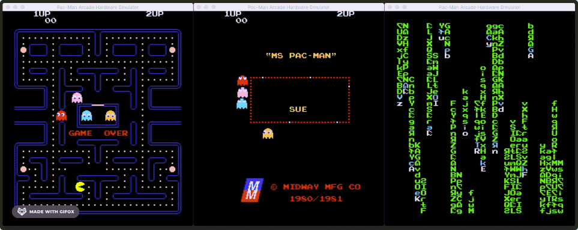
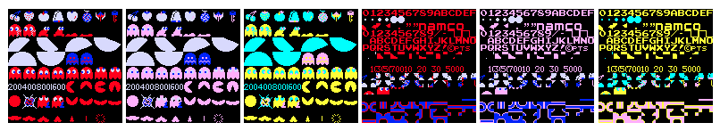

Once I finished up my Intel 8080 CPU core for my Space Invaders emulator, I wanted to move onto something a bit more challenging. I knew that the Zilog Z80 CPU was a "cousin" to the 8080; it was largely backwards compatible with the 8080, but also contained a superset of instructions. If I chose to emulate a Z80-based system, I would be able to reuse a large amount of my 8080 core's code.
I looked around for other systems that used the Z80, and there is no shortage!
- Home computers: ZX Spectrum, TRS-80, MSX, Amstrad CPC
- Handhelds: Nintendo Gameboy, Sega GameGear
- Arcades: Pac-Man, Rally X, Dig Dug, Galaga
This was great news; if I built a Z80 emulation core, I could then reuse it for other projects! I decided to start with something simple and well documented: Pac-Man. An additional bonus was that with minor changes, I would also be able to emulate Ms. Pac-Man; all Ms. Pac-Man boards are just Pac-Man boards with a daughterboard installed to modify the original CPU behavior and swap/patch certain ROMs. The story of Ms. Pac-Man it totally worth reading about.

Zilog Z80
I started with a copy of my Space Invaders repository and began stripping out the Space Invaders-specific code. I then got to work implementing the additional instructions present in the Z80. This site offers an interactive and searchable list of opcodes, which was extremely useful. Also, the 2016 version of the Z80 CPU User Manual provided a lot of details.
After implementing the additional instructions, it was time to go back and fix areas of the code that I hadn't completely finished for Space Invaders. I hadn't implemented the auxiliary carry flag and a few other opcodes that Space Invaders didn't use. This StackOverflow post was a great starting point for identifying the differences between the 8080 and Z80.
This part of the project took the longest; I had to rework all the code that set the flags register. As in the last project, writing unit tests along the way was integral to success.
Also like last time, I was able to verify my Z80 implementation by using a diagnostics program written for the original CPU. The Z80 Instruction Exerciser executes every opcode and then compares checksums of memory to checksums generated on actual hardware. Very cool!
I ended up with over 8000 unit test cases, though many of these were permutations of single tests using every register and/or several different memory location offsets.
Video
The Space Invaders video hardware was dead simple; because the screen was black and white, there was one bit per pixel, and the pixel was either on or off. Memory held the array of pixels, and I just needed to draw them using the SDL library.
There are downsides to this, however. Space Invaders included a dedicated bit shift hardware to make this faster.
Pac-Man is in color, of course, so its video hardware is a bit more advanced. It uses tiles and sprites along with pre-defined color palettes. Chris Lomont's Pac-Man Emulation Guide contains a ton of great information on exactly how it works, so I won't recap it all here.
Once I had written the code to draw the tiles, I needed to verify it, but I couldn't yet boot the game. Because the tile drawing code just reads the tile number and palette numbers out of memory, I fired up MAME and got a dump of Pac-Man at a couple of points during the attract screens. I then added this dump to my unit test and visually verified that my code generated a bitmap that matched MAME.
I did something similar to test the sprite hardware; I simply hard-coded the X/Y coordinates and sprite and palette numbers and then ran my render code via a unit test.
You can see the various test results here.

Audio
At this point, I was pretty comfortable emulating a CPU and video hardware, but had no idea how audio worked.
For Space Invaders, I opted not to emulate the analog audio hardware, and instead just played back pre-recorded wav files. This worked fine because the audio in Space Invaders is pretty simple.
In Pac-Man, however, the sound is much richer. There are three audio channels for sound effects, and several different music tracks that play during the intermission sequences.
Again, Chris Lomont's guide was a key resource. However, although I was able to easily implement the behavior of the audio hardware itself, I was at a loss on how to use the audio sample binary data I had to actually play back the audio.
Some Googling eventually led to the article Let there be sound, which begins with the absolute basics and eventually ends with code showing how to play a simple sine wave.
After some trial and error and a lot of static from the speakers, I was finally greeted with a deafening BOOWHAP coin-up sound scared me out of my seat. Pro tip: turn down your speakers before you try out new audio code. 🤣
Debugger
I added upon the interactive debugger from the Space Invaders codebase, which was previously implemented in text-mode inside of a standard console window (e.g. Console.WriteLine and Console.ReadKey). I wanted to make the debugger render inside of an SDL window so that I could have more control over the layout. For example, text can now be rendered in color and single pixels can be plotted. This also makes it easier to implement interactive UI elements, which can be seen in the save and load state menu where the arrows can be used instead of being required to type a full file path.
{kind=link}
{kind=link}
{kind=link}
{kind=link}
Bonus: Xbox Port
I came back a few months later and decided to try and port my emulator to a console. I already had the emulator up and running on Windows, Linux, and macOS courtesy of the cross-platform .NET Core runtime, C#, and SDL2. So naturally this was a great fit for a port to the Xbox One via a UWP application.
This led me down a bit of a side-adventure learning about how to get SDL2 running on an Xbox One inside of a UWP app, which was quite interesting. This led to me putting together a starter project template for anyone else who wants to port their SDL2 application to Xbox.
Results
This was an awesome project! It was slightly more challenging than Space Invaders, and taught me the basics of playing audio. With some minor modifications, I was able to run Ms. Pac-Man and homebrew ROMs. With a little more work, I should be able to run other games that run on very similar hardware, such as Rally X and Pengo. And now that I have a fully functioning Z80 core, I can continue on to something more advanced, like the Gameboy!
You can find more details on GitHub. The readme contains a resources section with some links to recommended reading.